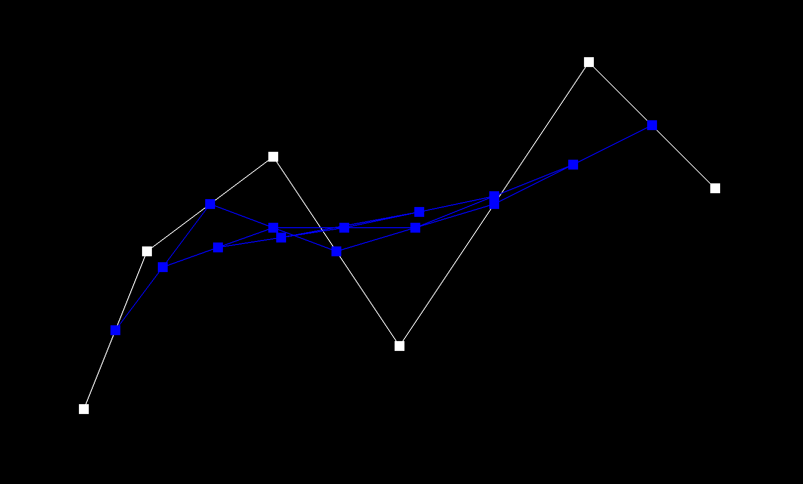
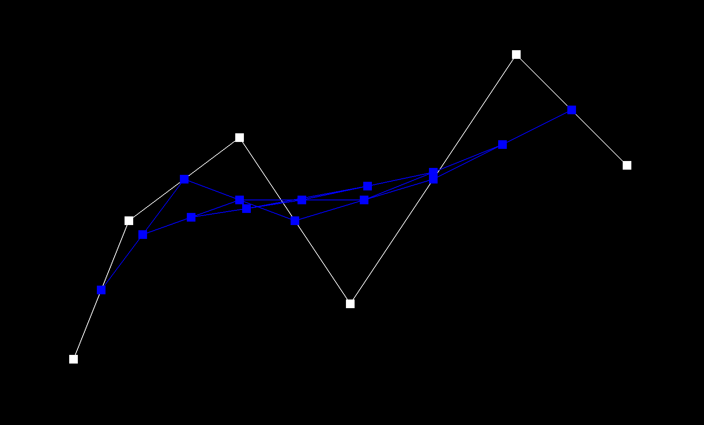

The focus of this project is to explore geomeetric modeling through Bezier curves and surfaces. By using the de Casteljau algorithm, manipulating triangle meshes through flipping and splitting different edges, as well as implementing loop subdivision, many different things can be achieved! It was interesting to see how each triangle in the mesh has so many different elements and what we can do with them. Especially with loop subdivision, we can create much rounder and smoother versions of our original meshes by splitting and flipping edges!
We use the de Casteljau algorithm to obtain the recursive step used to obtain a single point on the Bezier curve. We continuously interpolate between two adjacent control points to obtain an intermediate control point, then interpolate between adjacent intermediate control points, and so on until we arrive at a single, final point which is located on the Bezier curve. In other words, we use linear interpolation on n control points to find n-1 intermittent points, and repeat this step recursively until we are left with just one point. The equation to calculate the position of the intermediate points is as follows:
where the parameter t is a given parameter from the BezierCurve class.
 

The de Casteljau algorithm can also be extended to Bezier surfaces. Given an nxn grid of control points, Pij and two parameters u and v, we will first take each row of control points in the grid, parametrized by parameter u. This gives us n points. We then parametrize these n points using the parameter v to find a point P that lies on the Bezier surface.
In this part, I implemented area-weighted normal vectors at vertices to provide better shading (Phong shading) for smooth surfaces. We can compute the area-weighted normal by iterating through each triangle incident to the vertex and weight its normal by its area then finally normalizing this sum of area-weighted normals. The area can be calculated as such:
By taking the norm of the cross product of a and b, where and b are p1-p0 and p2-p0 for the three points in each triangle. Additionally, we divide this area by half to get the area of just a triangle.
Flat Shading
Phong Shading
For edge flip, I used the following diagram (found on Ed):

First, I gathered all of the elements illustrated in the first diagram. If the edge is a boundary, I simply return this input edge. Otherwise, I can move on to setting the halfedges of the vertices, edges, and faces based on the second diagram. Lastly, I use setNeighbors to set the next, twin, vertex, edge, and face attributes of each halfedge. For debugging, having a correct diagram was extremely useful. Since there were many different elements to keep track of it was easy to make mistakes when setting the halfedges and/or neighbors. Another mistake that I made initially was setting the faces of the halfedges on the outside to f0 or f1 or next of these halfedges to each other (eg. h6->next() = h9), which produces (very) incorrect results.
Before Flips
After Flips
For edge splitting, we want to insert a new vertex at the midpoint of the given edge, subsequently also creating two new faces, three new edges, and thus six new halfedges. For splitting, if our given edge is a boundary, I can simply return immediately and ignore the request to split this edge. Otherwise, the following diagram illustrates how I implemented edge splitting:

I first created all of the new elements that are added by the split. Then similar to edge flip, I assign the halfedges of the vertices, edges, and faces. Then I use setNeighbors on all of the halfedges. Additionally, I set the position of the new vertex to be the midpoint of the input edge. Learning from my mistakes in part 5, this part encountered less issues. Following the diagram made fixing mistakes and checking for correct assignments much easier.
Before Splits
After Splits
Before Flips & Splits
After Flips & Splits
For loop subdivision, I first calculate the positions and the original vertices as well as the new vertices to be added.
For each vertex in the original mesh, we recalculate its position with the equation (1 - n * u) * original_position + u * original_neighbor_position_sum. We can find the original_neighbor_position_sum by traversing through and summing all of the neighboring vertices. For each new vertex that we will have, we can go through each original edge in the mesh and calculate the position with 3/8 * (A + B) + 1/8 * (C + D). We store each of these calculated positions temporarily in newPosition because we will still need the original positions for edge splitting in the following step. Additionally, when we loop through the original vertices and edges, we want to set the isNew attribute of each of these elements to false. This will be useful in the following step when we need to determine whether or not an edge/vertex is new or not.
For the subdivision step, we have to first split all of the original edges. We can determine if each edge is in the original mesh or not by checking if both of its vertices are old. If so, it is in the original mesh and we will split it. Then, I set the newPosition of each new vertex created to be the newPosition we calculated and stored in the corresponding edge earlier. In edgeSplit, I also added a few additional lines setting the isNew attribute of the new vertex and the two new edges perpendicular to the input edge as true as this will be helpful for our next flipping step. For flipping, we only do so if it is a new edge that has exactly one new vertex and one old vertex.
Finally, we will set the positions of each vertex in the mesh (new and old) to be the positions we stored in newPosition.
For sharp corners and edges, they become more rounded after loop subdivision. We can reduce this effect by adding more edges in these areas. Additionally, the cube without edge preprocessing is asymmetrical, this is because the mesh of the cube is asymmetrical and we can split the diagonal edges of each side of the cube so that the cube subdivides symmetrically.
Original
Symmetrical
Symmetrical with Additional Edge Splits
Notice that by making the mesh symmetrical, our shape remained symmetrical after loop subdivision. And by adding more splits to the mesh, we can obtain a shape with less rounded edges and vertices after the same number of loop subdivisions.